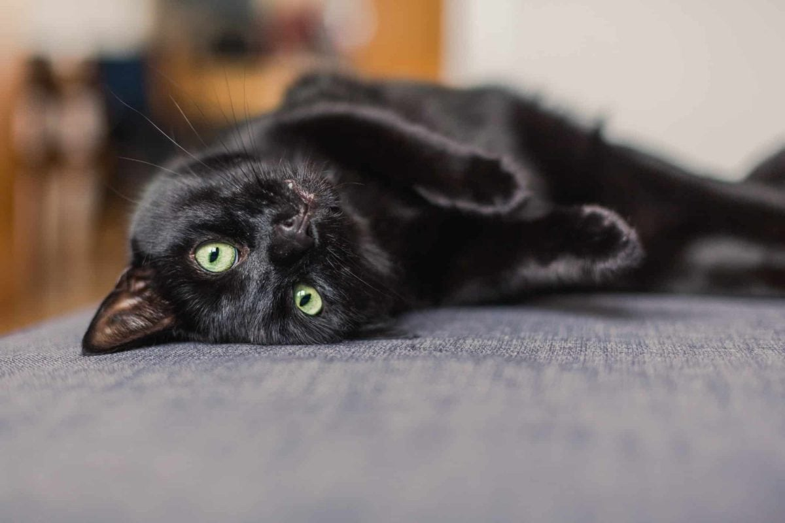
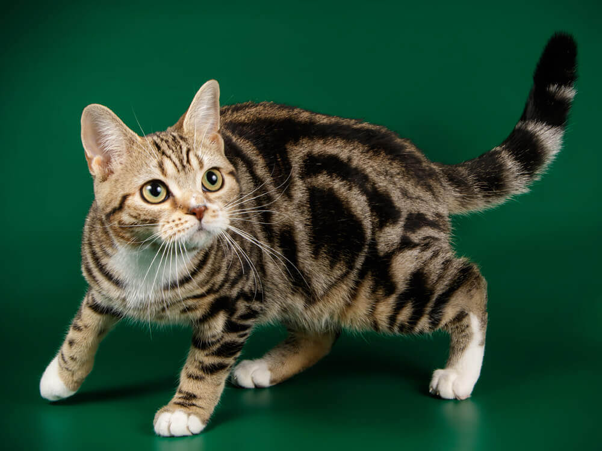

About Cats
Cats are known as a paw-some friend. They come in various breeds, sizes, and temperaments, but all share a love for companionship, play, and affection, while loving their independance.

Cats are known as a paw-some friend. They come in various breeds, sizes, and temperaments, but all share a love for companionship, play, and affection, while loving their independance.

Cats are naturally nocturnal, meaning they tend to sleep during the day and are awake at night. They also are able to see extremely well in the dark.
